주요 내용 Key Takeaways
데이터 완전성의 개념적 토대
'GMP의 시작은 곧 데이터 관리의 시작'이라는 관점에서 GMP의 역사(cGMP·KGMP·PIC/S 가입)와 21 CFR Part 11, ALCOA 원칙 등 DI의 기초 프레임워크를 정리했습니다.
전략 수립(IT/OT) 관점
GMP 환경의 IT 인프라 구축, OT(제어 시스템)와의 연계, 어플리케이션 수준의 CSV와 데이터 완전성 확보 전략을 공급사의 시각에서 제시했습니다.
전담부서 실무 사례
제조 관점(보령)과 품질 관점(대웅제약)에서 DI 전담 조직 운영과 적용 경험을 공유해, 이론에서 현장 적용으로 이어지는 흐름을 완성했습니다.
제1차 포럼은 데이터 완전성의 이해와 국내 도입 초기 사례를 나누는 '토대 구축형' 포럼이었습니다.
프로그램 Program
| 시간 | 프로그램 | 연사 |
|---|---|---|
| 10:00 – 10:15 | 접수 및 등록 | |
| Session 1. IT 기반 Data Integrity 전략 수립 | ||
| 10:15 – 10:45 | 발표Data Integrity Update and Issue | 김정민 대표 · ㈜아이앤씨피 |
| 10:45 – 11:35 | 발표IT Infra 구축 전략 수립 (GMP Infra, IT & OT) + 패널토론 | 이창수 팀장 · 디에이인포메이션㈜ |
| 11:40 – 12:30 | 발표어플리케이션 구축 전략 수립 (GMP 시스템과 Data Integrity) + 패널토론 | 이기원 팀장 · ㈜아이디에스앤트러스트 |
| 12:30 – 13:30 | Lunch Time | |
| Session 2. DI 전담부서를 통해 듣는 실무 적용 사례 | ||
| 13:30 – 14:30 | 사례 1제조 관점의 DI 사례 + 패널토론 | 최병인 팀장 · ㈜보령 |
| 14:45 – 15:45 | 사례 2품질 관점의 DI 사례 + 패널토론 | 김기성 · ㈜대웅제약 |
| 15:45 – 16:00 | 마무리Closing | 김정민 대표 · ㈜아이앤씨피 |
현장 스케치 Photos
2024. 11. 12 · 코엑스 Seminar B

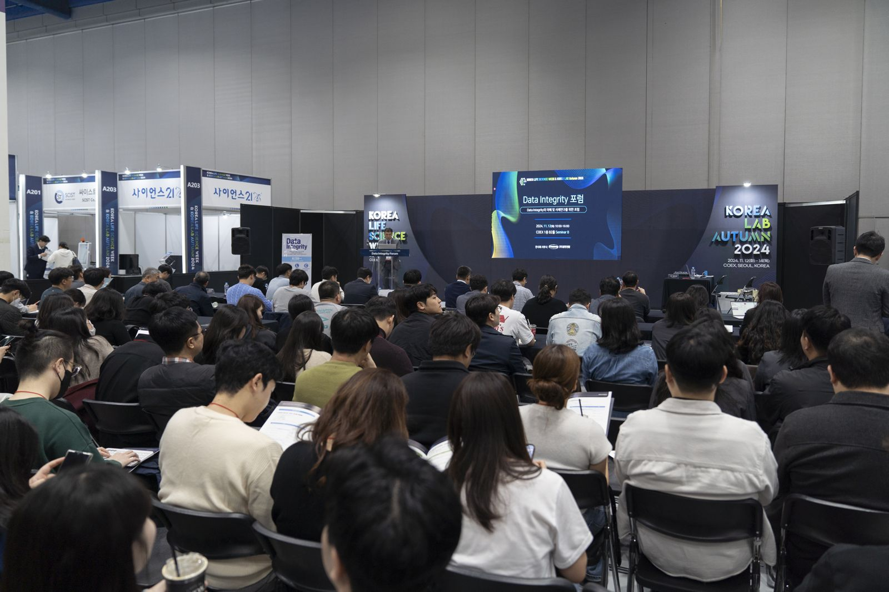

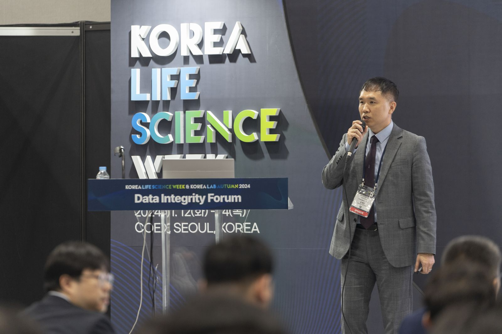

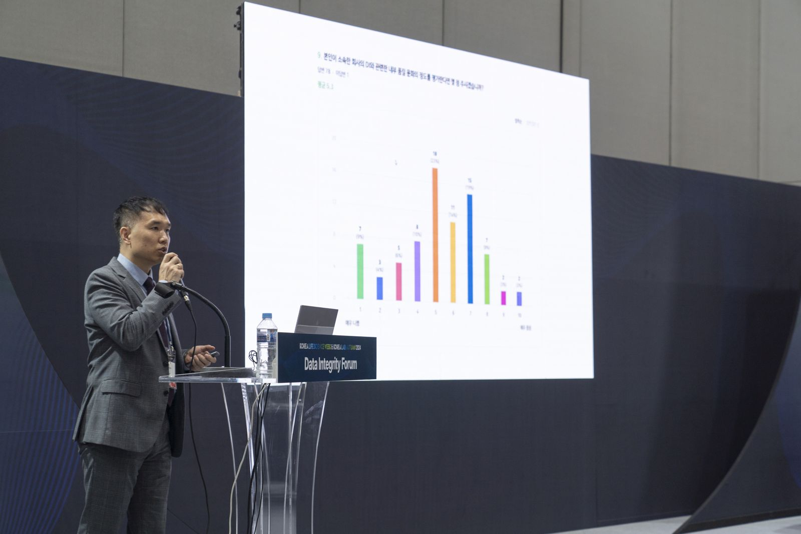

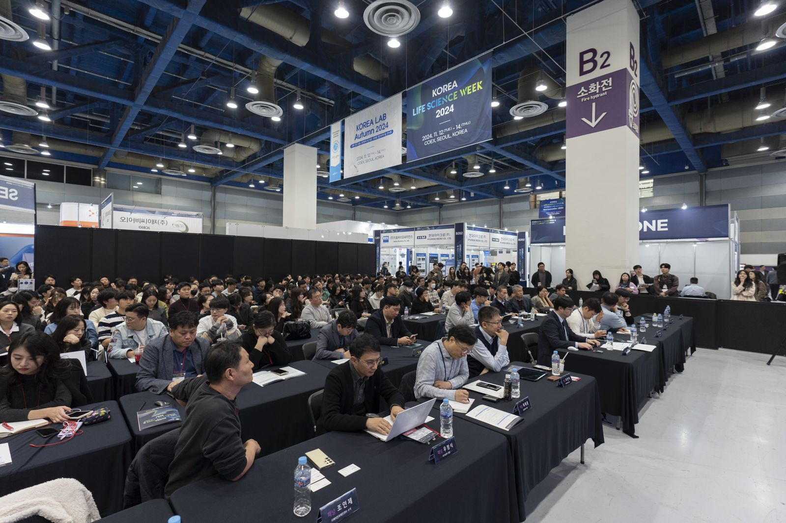

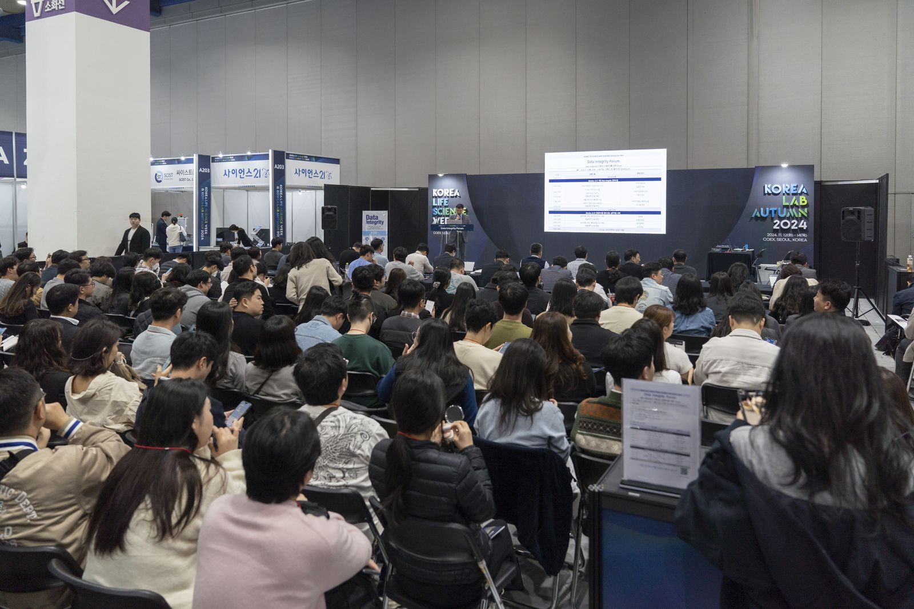

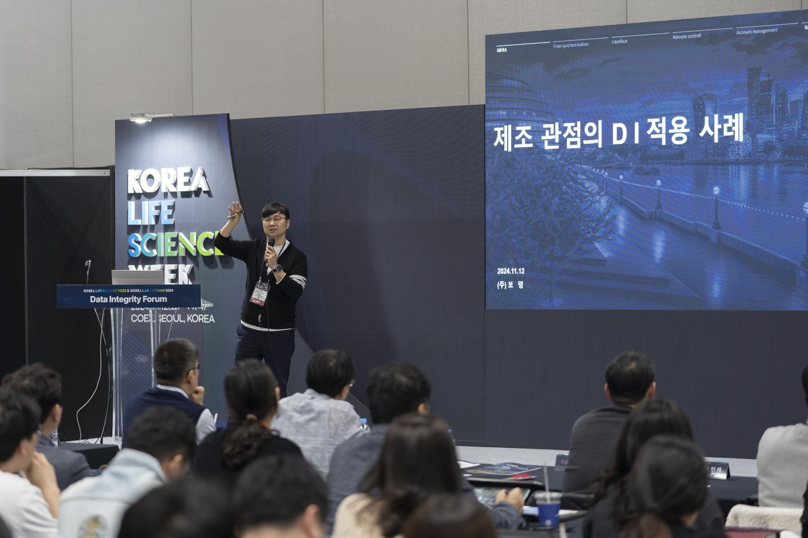

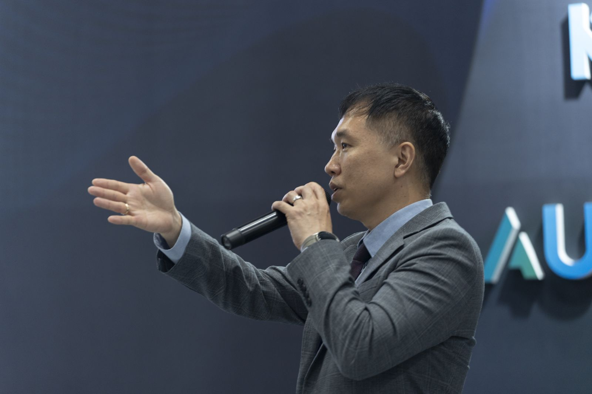

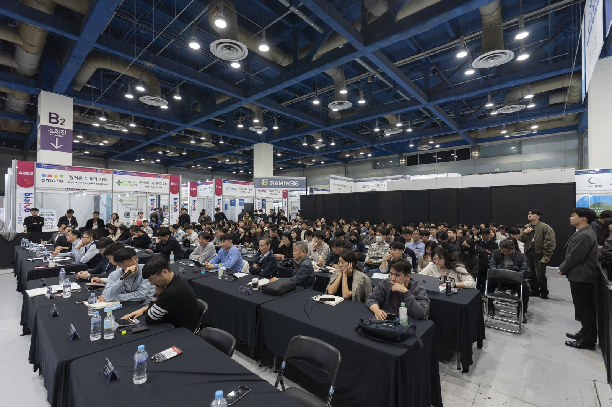

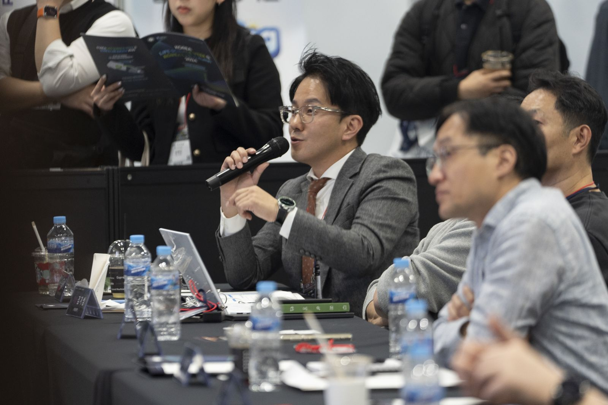

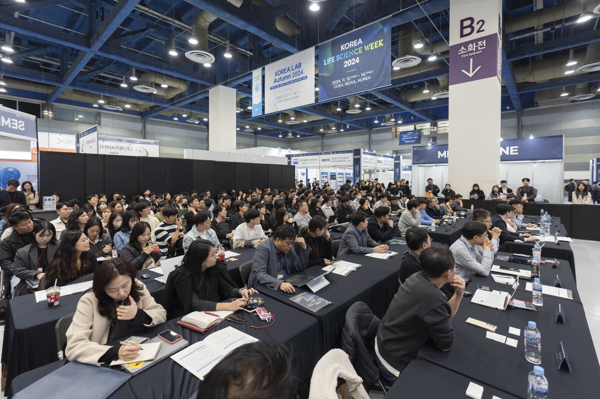

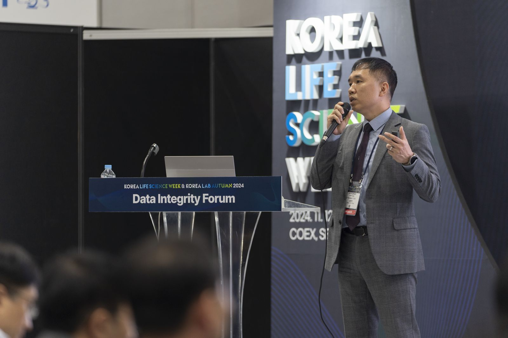
기록으로 보는 2024 Archive
행사 커버 · 프로그램 · Seminar B 배치도 · 기조발표


다른 회차 보기
전체 아카이브 →해석이 어려웠던 규정·가이드라인을 알려 주세요
규정이나 가이드라인을 읽다가 해석이 분명하지 않았던 부분이 있다면 incp@diforum.org로 보내 주세요. 10명 이상이 요청해 주신 주제는 특별판 뉴스레터로 다루겠습니다.
DI Forum 뉴스레터 이메일 구독
새 호와 포럼 소식을 메일로 받아보세요. 월 1~2회 발송, 언제든 수신거부할 수 있습니다.
LinkedIn을 쓰신다면 → LinkedIn 뉴스레터로 구독